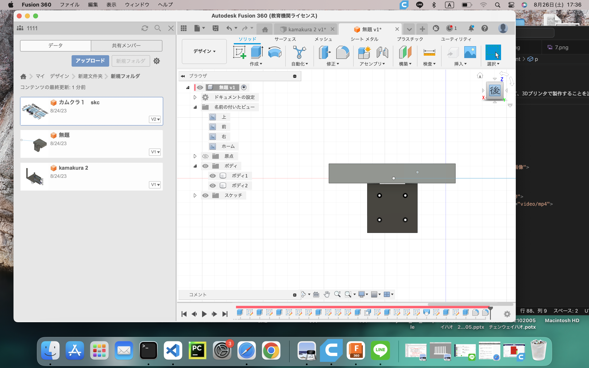
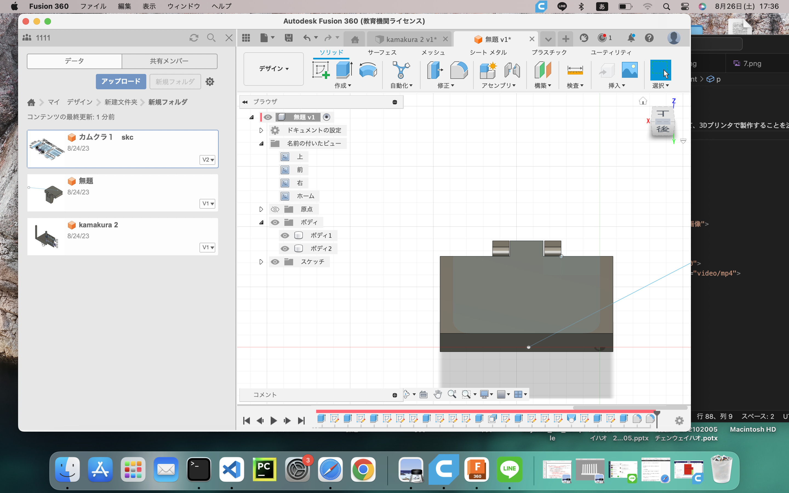
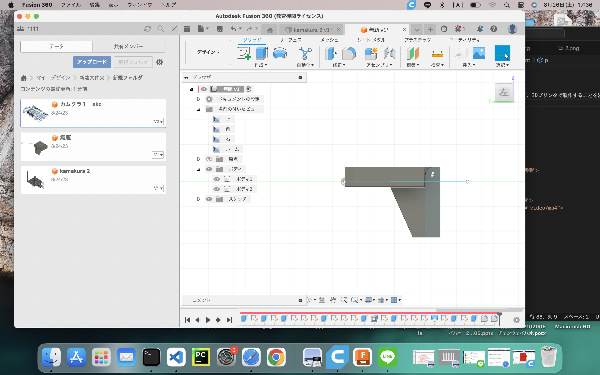
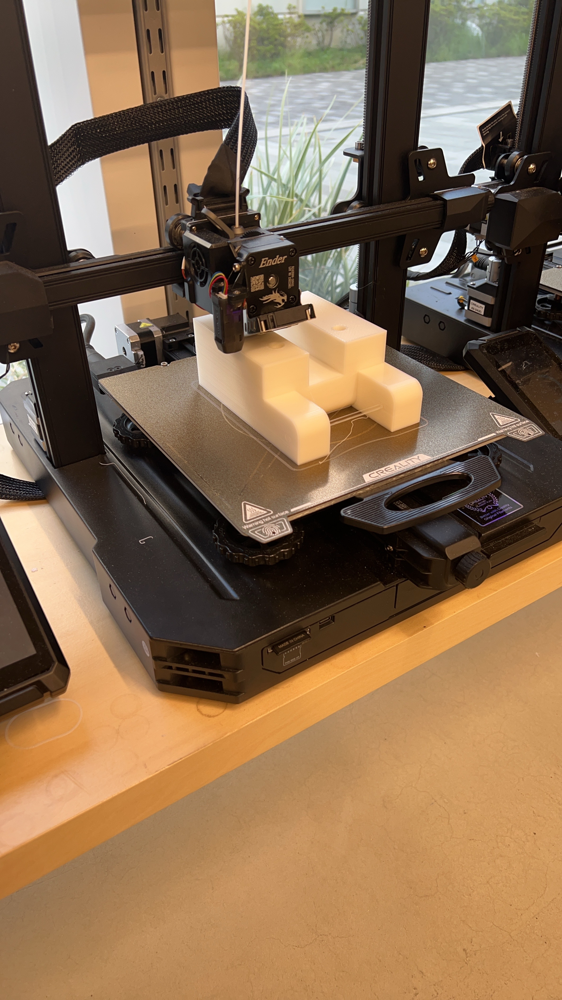
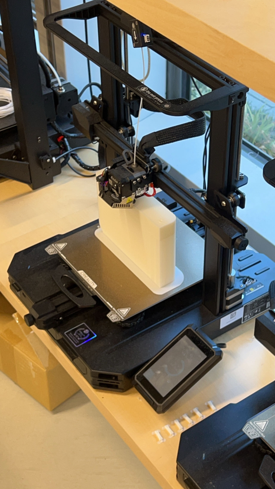

ベンチ
背景：観光地としての鎌倉の町は食べ歩き街や寺などが多く、あることが多いのに対してベンチの数が少ないことから、持ち歩きができる軽量な椅子があったら良い。
１、初めてメンバーと話し合う後、現在のネット通販で販売されている持ち歩きができる軽量なベンチの種類は非常に多く、最も安いものは数百元程度。
そこでこれらを考慮して、鎌倉のベンチが少ない問題に対して解決策を出すつもりだ。
試作：折り畳み式で、道路空間を占有しすぎてはいけない、現地の雰囲気を壊さない➡️木製。
店の壁や塀などと固定し、使うときは下ろる。狭い道路スペースを取らないようにすることができる。

試作品の画像






